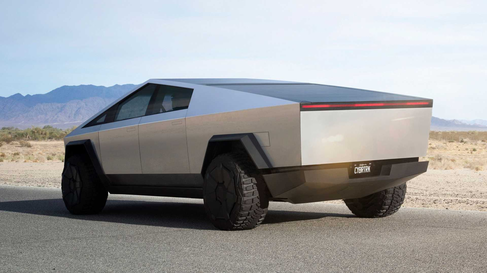

VERSATILE UTILITY
With up to 3,500 pounds of payload capacity and adjustable air suspension, Cybertruck is the most powerful tool we have ever built, engineered with 100 cubic feet of exterior, lockable storage — including a magic tonneau cover that is strong enough to stand on.

RUGGED STRENGTH
With the ability to pull near infinite mass and a towing capability of over 14,000 pounds, Cybertruck can perform in almost any extreme situation with ease.
VAULT-LIKE STORAGE
Space for your toolbox, tire and Cyberquad, with room to spare. Utilize 100 cubic feet of exterior, lockable storage — including the under-bed, frunk and sail pillars.